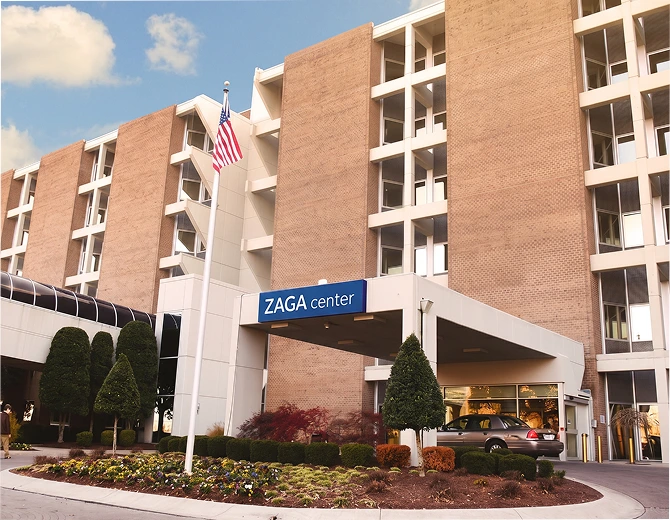

ZAGA
Center Kyiv
· 70+ центрів · 15+ країн
Primo Dental — перший та єдиний ZAGA Center в Україні. Той самий протокол зигоматичної імплантації, що і в Барселоні, Франкфурті та Нью-Йорку.
Що таке ZAGA?
Zygoma Anatomy-Guided Approach
ZAGA — міжнародна система сертифікації клінік та хірургів по зигоматичній імплантації, розроблена засновника ZAGA мережі спільно зі Straumann Group. Мережа об'єднує 70+ сертифікованих центрів у 15+ країнах.
Кожен ZAGA Center виконує операції за єдиним протоколом: анатомічно-направлений вибір між Straumann ZAGA Round і ZAGA Flat залежно від морфології вилицевої кістки пацієнта. Стандарт якості — ідентичний у будь-якій точці світу.
Primo Dental — перша та єдина клініка в Україні з офіційною сертифікацією. Dr. Maxym Prytula описаний на zagacenters.com як "one of the youngest members of the ZAGA Centers Network" з акцентом на fully digital workflow.

ZAGA Centers мережа
Обрані центри по всьому світу
- ZAGA Center Kyiv ВИ ТУТ
- 74 ZAGA Centers світу
- 74 центри — засновника мережі (засновник)
- у 15+ країнах
- Загалом 74 ZAGA Centers · 15+ країн
Показання
Кому показана
Zygoma-імплантація?
-
Критична атрофія верхньої щелепи
Кістки щелепи занадто мало для All-on-4 або класичних імплантів. Zygoma спирається на вилицеву кістку — атрофія не перешкода.
-
Відмова в інших клініках
«Неможливо», «спочатку 6–12 місяців нарощування кістки». Zygoma — рішення без пластики для складних випадків.
-
Невдалі попередні операції
Відторгнення імплантів, ускладнення після синус-ліфтингу. Беремось за ревізійні та складні ситуації.
-
Потрібен результат без очікування
Немає часу чекати після кісткової пластики. Zygoma — зуби в день операції без проміжних операцій.
-
Травми та стани щелепи
Після пухлин, травм, онкологічних резекцій — де стандартна імплантація анатомічно неможлива.
-
ZAGA Passport — міжнародна підтримка
Документ з даними про імпланти. Підтримка у 70+ ZAGA Centers по всьому світу — безстроково.
Цифровий протокол
Навігаційна
хірургія
Ми працюємо виключно в повному навігаційному протоколі по хірургічних шаблонах. Кожна операція планується цифрово — 3D-модель, розміщення імплантів, хірургічний шаблон — і лише потім виконується.
Це дає максимальну точність та передбачуваний результат. Офіційний партнер ImplaStation — цифрової програми планування оперативних втручань.
Комп'ютерно-направлена хірургія
Хірургічний шаблон виготовляється до операції — точність до десятих мм
Партнер ImplaStation
Офіційний партнер цифрової програми планування та реалізації операцій
Face-Driven 4D Patient
Цифровий аватар пацієнта: кістки, ясна, зуби, обличчя — планування у 4D до втручання

Про лікаря в мережі
Dr. Maxym Prytula
у мережі ZAGA Centers
На офіційному сайті zagacenters.com Dr. Maxym Prytula описаний як щелепно-лицевий хірург та біоінженер — «один з наймолодших членів глобальної мережі ZAGA Centers». Спеціалізація: fully digital workflow, комп'ютерно-направлена хірургія, рішення для екстремальної атрофії.
-
ZAGA Center Kyiv
Перший та єдиний в Україні
-
Straumann-партнер
Офіційний партнер виробника ZAGA-імплантів
-
Учасник ZAGA Studies
Ongoing clinical research · 2 наукові публікації

Безкоштовна консультація + план з вартістю — в один день